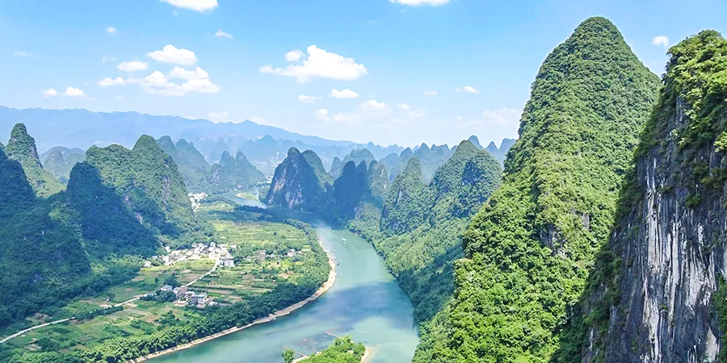
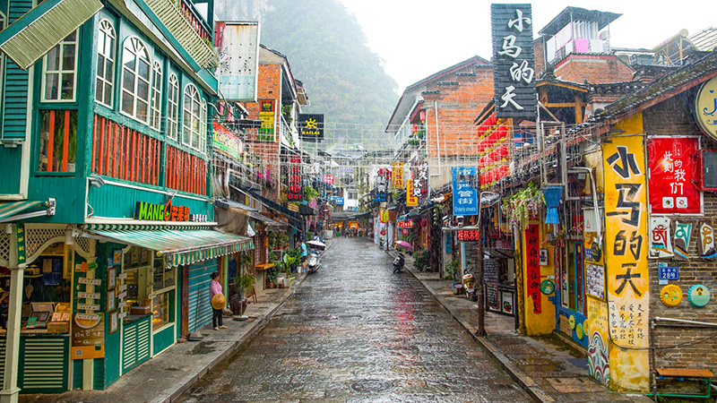
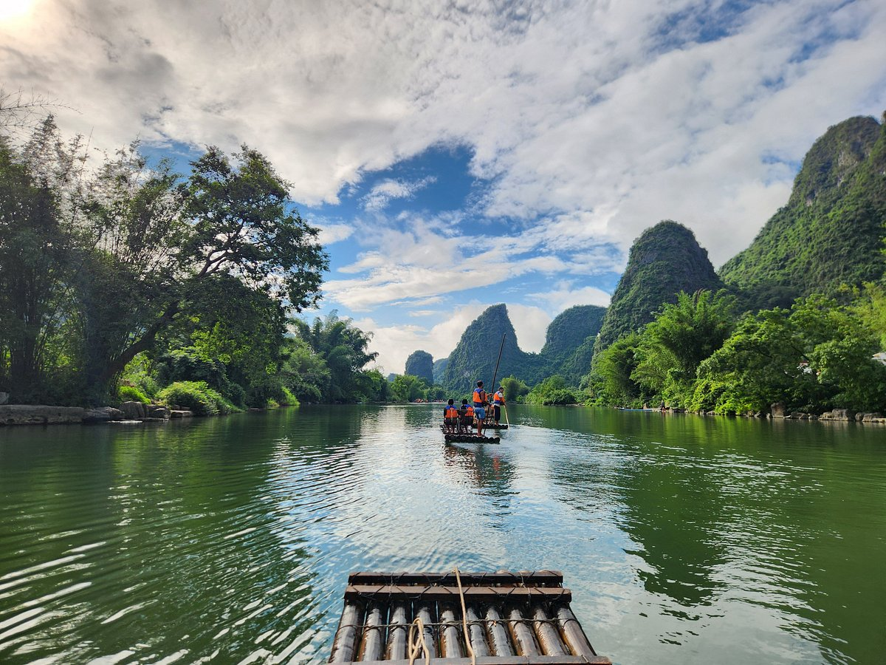
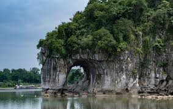
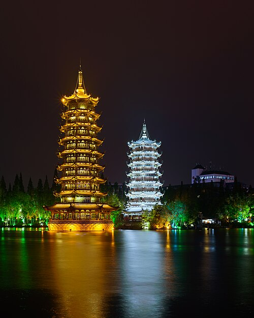

Yangshuo & Xingping
High-Speed Train: Shenzhen North → Guilin North
Smooth 3 hr 11 min train ride through southern China.
¥272.5 (~A$57)
High-Speed Train: Guilin North → Yangshuo
Short connecting train to Yangshuo station.
¥27 (~A$5.60)
Hotel Check-in & Lunch in Yangshuo
40 min Didi/shuttle to hotel near West Street. Quick check-in and lunch at a local café or noodle house.
¥30–50 (~A$6–10)
Didi to Xingping
45 min drive to the riverside ancient town surrounded by karst peaks.
20 RMB Note Viewpoint (Xingping)
Short walk to the iconic bend in the Li River that appears on the ¥20 note. No ticket required. ~30–45 min

Return to Yangshuo
Drive back ~45 min. Rest en route.
Ten Mile Gallery Ride/Walk
Leisurely ride through rice fields and mountains. No entry fee. Bike or scooter rental available. ~1.5 hrs
Bike rental ¥20–30 (~A$4–6)
Dinner in Yangshuo
Try local dishes like beer-braised fish. Optional walk along West Street night market.
¥40–70 (~A$8–14)
Bamboo Rafting & Guilin
Bamboo Rafting on Yulong River
Peaceful 1 hr float past farms and karst peaks.
~A$45 per person
Return to Hotel & Check-out
Short 15 min ride. Pack up and grab snacks or a quick lunch.
Didi to Guilin City
Scenic 1.5 hr drive (~70 km).
~¥120–140 per car (~A$25–30, or A$3–5 pp shared)
Elephant Trunk Hill
Free-entry riverside park with a natural rock arch resembling an elephant drinking. Short loop walk and optional climb. ~30–45 min
Sun & Moon Pagodas at Shan Lake
Twin towers that light up at night. Free to view from the lakeside. Optional entry. ~30–60 min
Optional entry ¥30–55 (~A$6–11)
Dinner or Snacks by the Lake
Grab local noodles, dumplings or skewers nearby.
¥40–60 (~A$8–12)
Didi to Guilin North Station
25 min drive. Aim to arrive by 18:55.
High-Speed Train: Guilin North → Shenzhen North
Evening return journey.
¥260 (~A$54)